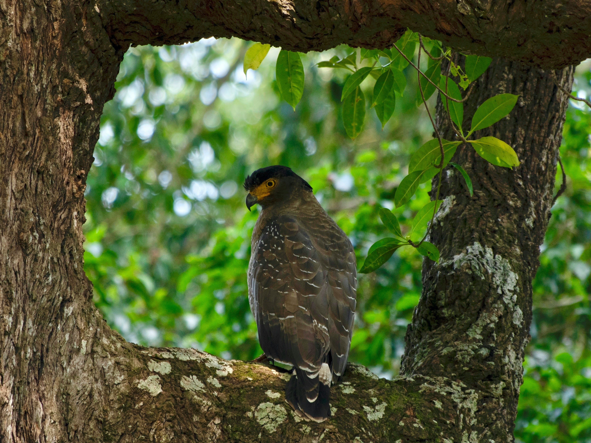

The Crested Serpent Eagle is a medium-sized forest raptor with a broad wingspan, rounded wings, a prominent crest, and a distinctive yellow facial area. It feeds mainly on snakes and other reptiles but also takes frogs, small mammals, birds, and insects. Its loud, ringing call is often heard from forested hills before the bird itself is seen soaring overhead. Compared with the similar Shikra, it is distinguished by the combination of features described above. Its preference for forests, woodland, plantations, and forested hills also helps separate it from species that use different habitats. Its characteristic behaviour, including often perches quietly before taking short flights or soaring over forested areas, provides another useful field clue. Taken together, these differences make it easier to distinguish from similar species when the bird is seen clearly.